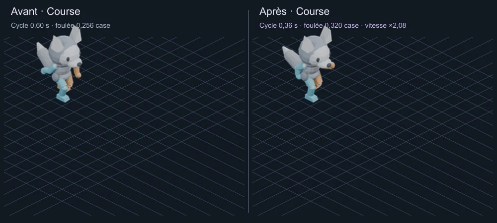
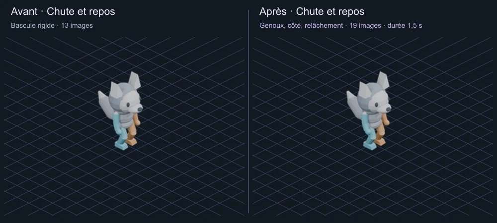
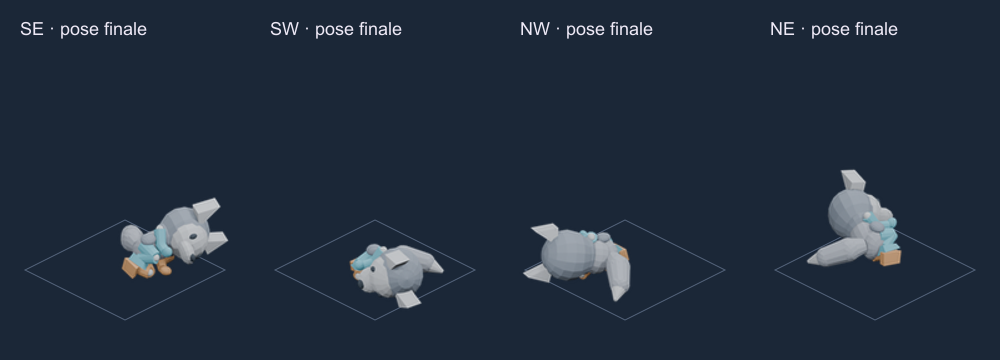
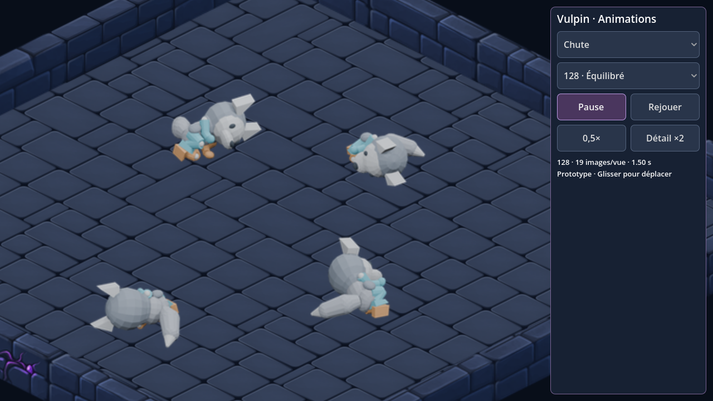

Vulpin — course et chute retravaillées
Après le test Android : la course était trop lente et la chute faisait basculer le personnage comme un bloc. Cette proposition corrige les mouvements du mannequin articulé, dans les quatre orientations.
Aperçu local uniquement. L’APK vulpin-0.1 déjà téléchargé conserve les anciennes animations. Aucun nouvel APK n’a été construit. Le personnage reste un mannequin sans textures ; le rendu artistique final et l’intégration au héros du jeu restent à faire.
Course : cadence et foulée
Le cycle passe de 0,60 à 0,36 seconde. La foulée augmente de 0,256 à 0,320 case : le déplacement de démonstration est 2,08 fois plus rapide. Les bras sont davantage pliés et les appuis alternent avec une phase en l’air. Les deux côtés ci-dessous ont la même échelle et la même durée réelle. Le comparatif recommence toutes les deux secondes.

Chute : perte d’appui, bascule latérale, relâchement
Le bassin descend avant la rotation. Les jambes plient, puis le corps tombe sur le côté ; les bras, la tête et la queue suivent avec un décalage. La pose finale est asymétrique, avec les membres repliés. L’état « mort » réutilise exactement la dernière image de chute. Durée inchangée : 1,5 seconde, puis maintien de la pose.

Pose finale dans les quatre directions

Vérification dans le donjon natif
Capture Godot au grossissement de détail ×2, avec les mêmes atlas que l’aperçu. Les couleurs cyan et cuivre servent à distinguer les côtés du mannequin.

Budget du profil 128 px
| Avant | Après |
|---|
| Images de course / direction | 16 | 16 |
| Images de chute / direction | 13 | 19 |
| Paquet des 9 états / 4 vues | 2,77 Mo | 2,96 Mo |
| Pixels RGBA des atlas | 12,26 Mo | 13,32 Mo |
Mo décimaux. Le paquet inclut les ressources d’animation importées, pas le moteur Android. Ces mesures portent sur le mannequin : la peinture finale peut modifier la compression. Les six autres actions conservent leurs 628 images sources à l’identique.
Rig Blender et actions · Vérifications · Appuis et articulations · Course dans Godot
Vérifications locales : limites de membres, appuis et contacts au sol, boucles, maintien de la mort, cadrage, atlas, lecture native et commandes du visualiseur. Pas de test physique sur téléphone de cette nouvelle version, de simulation de collisions entre membres, ni de validation artistique automatique. Les vitesses du jeu lui-même et les sauvegardes restent inchangées.